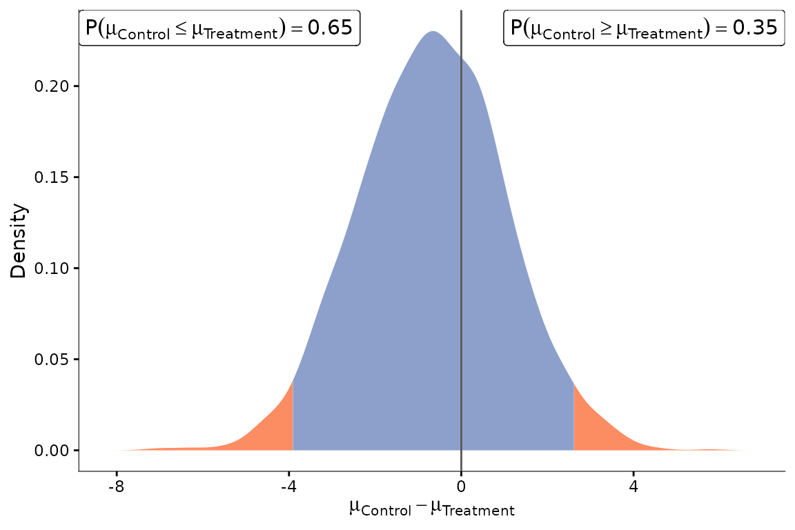
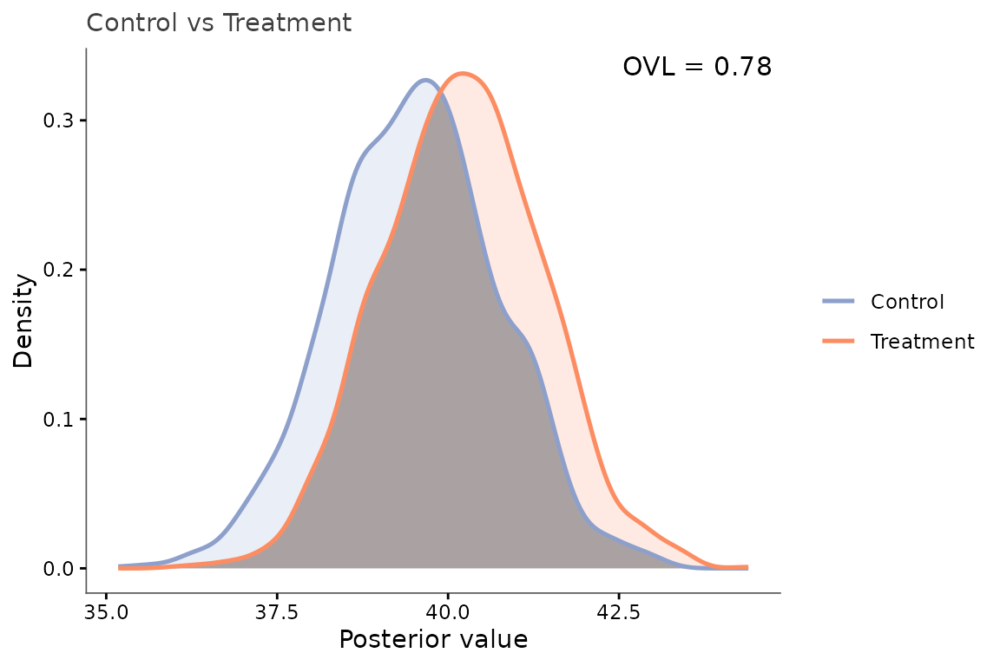
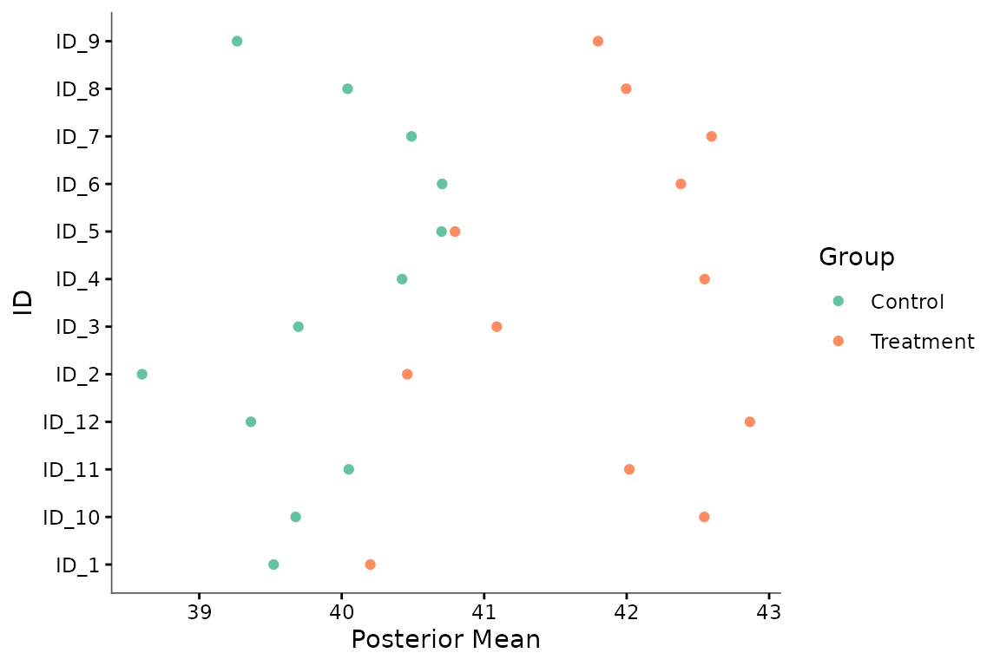
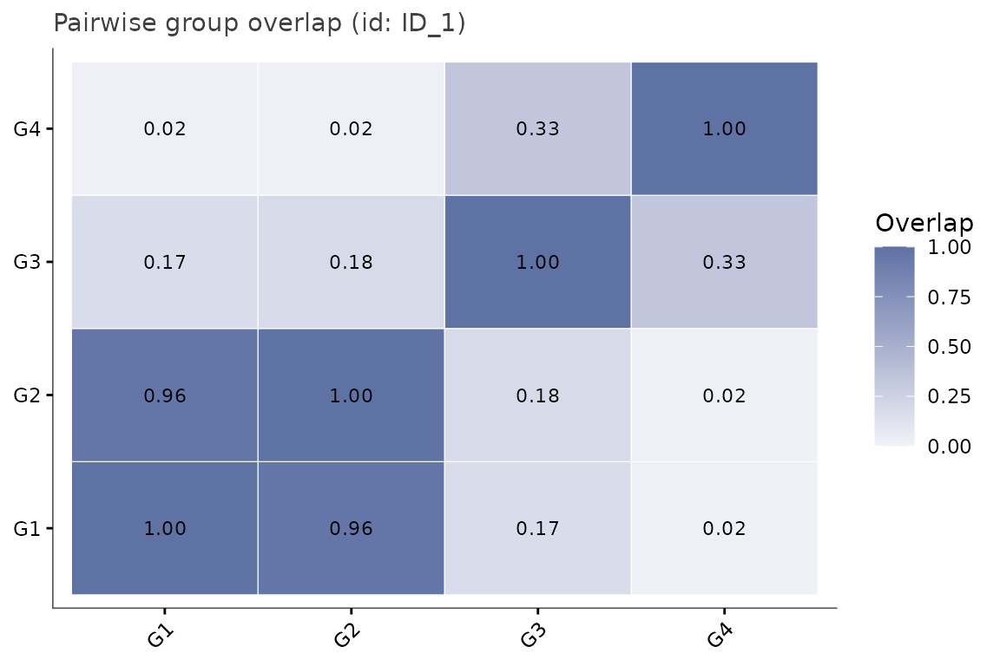
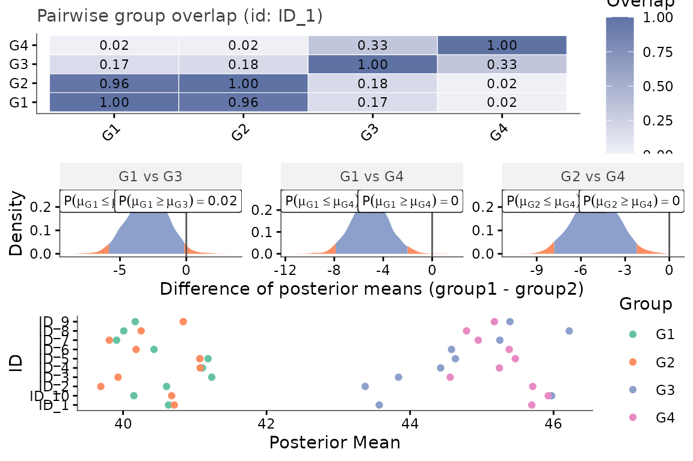
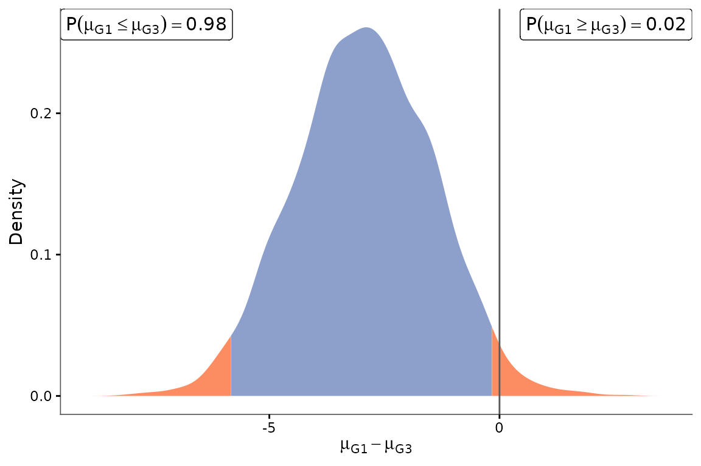

Omics analysis: two-group and multi-group examples
Source:vignettes/omics-analysis.Rmd
omics-analysis.Rmd
knitr::opts_chunk$set(message = FALSE, warning = FALSE)
library(keRnel)
library(BayesOmics)Introduction
In many omics datasets, measurements are not independent across the dimension they are indexed by: neighbouring positions along a genome, consecutive time points, increasing doses, adjacent m/z values, etc. tend to behave similarly. Treating each feature as an independent test discards that structure. BayesOmics instead places a kernel over that input dimension, so that a whole set of features is analyzed as a single multivariate object: a posterior profile (and its uncertainty) is estimated jointly across all features at once, per experimental group, and groups are then compared as complete profiles rather than feature-by-feature.
In this vignette, DNA methylation serves as a concrete and reproducible example: each row corresponds to the expression measurement (Output) of a CpG site (ID) at a specific genomic position (Input), observed under a given condition (Group) - but nothing in the pipeline below is specific to methylation; the same code applies unchanged to transcriptomic, metabolomics, or any other omics data with a meaningful ordering or distance between features.
The pipeline has five stages:
-
Load (or, here, simulate) data - a long-format data
frame with columns
ID,Group,Sample,Input,Output(see “Data structure” below). -
Optimize kernel hyperparameters
(
optim_hp()) - fit the kernel to the data by maximum likelihood, learning how far the correlation between features extends alongInput. -
Compute posteriors (
posterior_mean()) - one posterior profile per group, sharing kernel matrices across groups that share the same set ofInputvalues. -
Differential analysis
(
calculate_group_overlaps()) - a pairwise overlapping coefficient (OVL) between every pair of groups’ posterior profiles, summarizing how different they are. -
Visualization (
sample_posterior()+ theplot_*()functions) - draw samples from the posteriors and plot them, feature by feature or as a global, group-level picture.
This vignette walks through the pipeline for a two-group comparison and then for a design with more than two groups, and along the way demonstrates every plotting function the package provides and how to read it.
Data structure
Every input data frame must contain exactly these five columns:
| Column | Meaning |
|---|---|
ID |
Feature identifier (e.g. a CpG site, a peptide, a metabolite) |
Group |
Experimental condition the observation belongs to |
Sample |
Replicate identifier within a group |
Input |
The covariate the kernel operates on (e.g. genomic position) |
Output |
The observed measurement |
Use case 1: two groups
We simulate a region of 12 features at positions drawn from a
200-unit axis. simu_db_kernel() draws the baseline profile
of each group jointly from the kernel prior (SE kernel:
,
),
so that nearby features genuinely start out at similar values - exactly
the correlated structure the model is meant to recover. The second group
then applies a modest, region-wide shift (+2) on top of that profile,
and each replicate adds independent measurement noise
(,
i.e. var_sample = 2.25):
set.seed(29)
profile_kernel <- variance_kernel(variance = 8) * se_kernel(length_scale = 60)
data <- simu_db_kernel(
kernel = profile_kernel,
integer_input = TRUE,
nb_id = 12,
nb_group = 2,
nb_sample = 8,
diff_group = 2,
var_sample = 2.25,
mu_0 = 40,
range_input = c(0, 200),
group_labels = c("Control", "Treatment")
)
head(data)
#> ID Group Sample Input_ID Input Output
#> 1 ID_1 Control 1 1 2 37.02237
#> 2 ID_2 Control 1 1 16 38.61176
#> 3 ID_3 Control 1 1 89 42.82978
#> 4 ID_4 Control 1 1 108 43.16989
#> 5 ID_5 Control 1 1 132 46.78980
#> 6 ID_6 Control 1 1 139 45.48980Combine an SE kernel with a NoiseKernel nugget, and fit
all three hyperparameters by maximum likelihood on the Control group. To
keep the kernel matrix well-conditioned, we average the replicates per
feature first and pass one aggregate value per feature to
optim_hp(), rather than all raw replicate rows:
se_part <- variance_kernel(variance = 1) * se_kernel(length_scale = 1)
noise_part <- white_noise_kernel(noise = 1)
ker <- se_part + noise_part
prior_mean <- mean(data$Output)
hp_opt <- optim_hp(ker, data, prior_mean = prior_mean, prior_cov = 1e-6)
ker_opt <- do.call(kupdate, c(list(ker), as.list(hp_opt)))
hp_opt
#> variance length_scale noise
#> 10.251295 60.261358 2.527842
#> attr(,"convergence")
#> [1] 0
#> attr(,"value")
#> [1] 428.365The fitted hyperparameters closely recover the simulation values: a length scale of about 60.26 (true: 60) confirms that correlation extends over most of the 200-unit axis; a signal variance of about 10 (true: 8) matches the kernel amplitude; and a nugget of about 2.5 reflects the residual noise on the per-feature sample mean.
Compute the posterior profile of each group, and the OVL between them for the whole region:
posterior <- posterior_mean(data, ker_opt, mu_0 = prior_mean, lambda_0 = 1)
calculate_group_overlaps(posterior)
#> Control Treatment
#> Control 1.00000000 0.01337352
#> Treatment 0.01337352 1.00000000
print(posterior)
#> <BayesOmics posterior> 2 group(s), 1 cached kernel matrix/matrices
#>
#> -- Group Control (12 IDs) --
#> Posterior mean:
#> ID_1 ID_10 ID_11 ID_12 ID_2 ID_3 ID_4 ID_5 ID_6 ID_7 ID_8
#> 39.545 39.686 40.068 39.394 38.609 39.717 40.435 40.738 40.716 40.523 40.062
#> ID_9
#> 39.289
#> Posterior covariance:
#> ID_1 ID_10 ID_11 ID_12 ID_2 ID_3 ID_4 ID_5 ID_6 ID_7 ID_8 ID_9
#> ID_1 1.420 0.018 0.013 0.008 1.109 0.402 0.242 0.111 0.086 0.035 0.027 0.022
#> ID_10 0.018 1.420 1.129 1.089 0.035 0.411 0.614 0.883 0.953 1.109 1.129 1.137
#> ID_11 0.013 1.129 1.420 1.123 0.024 0.337 0.525 0.796 0.873 1.066 1.100 1.117
#> ID_12 0.008 1.089 1.123 1.420 0.015 0.257 0.421 0.682 0.762 0.989 1.038 1.066
#> ID_2 1.109 0.035 0.024 0.015 1.420 0.547 0.355 0.179 0.142 0.063 0.049 0.042
#> ID_3 0.402 0.411 0.337 0.257 0.547 1.420 1.084 0.883 0.807 0.558 0.493 0.451
#> ID_4 0.242 0.614 0.525 0.421 0.355 1.084 1.420 1.052 0.998 0.774 0.705 0.659
#> ID_5 0.111 0.883 0.796 0.682 0.179 0.883 1.052 1.420 1.131 1.014 0.962 0.924
#> ID_6 0.086 0.953 0.873 0.762 0.142 0.807 0.998 1.131 1.420 1.066 1.022 0.989
#> ID_7 0.035 1.109 1.066 0.989 0.063 0.558 0.774 1.014 1.066 1.420 1.133 1.123
#> ID_8 0.027 1.129 1.100 1.038 0.049 0.493 0.705 0.962 1.022 1.133 1.420 1.137
#> ID_9 0.022 1.137 1.117 1.066 0.042 0.451 0.659 0.924 0.989 1.123 1.137 1.420
#>
#> -- Group Treatment (12 IDs) --
#> Posterior mean:
#> ID_1 ID_10 ID_11 ID_12 ID_2 ID_3 ID_4 ID_5 ID_6 ID_7 ID_8
#> 40.175 42.537 42.002 42.876 40.434 41.058 42.510 40.784 42.378 42.583 41.991
#> ID_9
#> 41.781
#> Posterior covariance:
#> ID_1 ID_10 ID_11 ID_12 ID_2 ID_3 ID_4 ID_5 ID_6 ID_7 ID_8 ID_9
#> ID_1 1.420 0.018 0.013 0.008 1.109 0.402 0.242 0.111 0.086 0.035 0.027 0.022
#> ID_10 0.018 1.420 1.129 1.089 0.035 0.411 0.614 0.883 0.953 1.109 1.129 1.137
#> ID_11 0.013 1.129 1.420 1.123 0.024 0.337 0.525 0.796 0.873 1.066 1.100 1.117
#> ID_12 0.008 1.089 1.123 1.420 0.015 0.257 0.421 0.682 0.762 0.989 1.038 1.066
#> ID_2 1.109 0.035 0.024 0.015 1.420 0.547 0.355 0.179 0.142 0.063 0.049 0.042
#> ID_3 0.402 0.411 0.337 0.257 0.547 1.420 1.084 0.883 0.807 0.558 0.493 0.451
#> ID_4 0.242 0.614 0.525 0.421 0.355 1.084 1.420 1.052 0.998 0.774 0.705 0.659
#> ID_5 0.111 0.883 0.796 0.682 0.179 0.883 1.052 1.420 1.131 1.014 0.962 0.924
#> ID_6 0.086 0.953 0.873 0.762 0.142 0.807 0.998 1.131 1.420 1.066 1.022 0.989
#> ID_7 0.035 1.109 1.066 0.989 0.063 0.558 0.774 1.014 1.066 1.420 1.133 1.123
#> ID_8 0.027 1.129 1.100 1.038 0.049 0.493 0.705 0.962 1.022 1.133 1.420 1.137
#> ID_9 0.022 1.137 1.117 1.066 0.042 0.451 0.659 0.924 0.989 1.123 1.137 1.420With 12 features and 8 replicates, the posteriors are highly concentrated. The two groups - whose baseline profiles were drawn independently from the same kernel prior and further separated by a +2 shift - are completely non-overlapping: OVL = 0 signals a clear-cut, region-wide difference. The single coefficient already accounts for the correlation between the 12 features, so it cannot be biased by how many features happen to be probed.
Draw samples from the posteriors, and use plot_distrib()
to plot the posterior distribution of the difference of means for one
feature:
samples <- sample_posterior(posterior, n = 2000)
plot_distrib(samples, group1 = "Control", group2 = "Treatment", id = unique(samples$ID)[1])
The plot shows the posterior distribution of for that feature, together with the probabilities and - i.e. how confidently the model calls a directional difference at that position once the rest of the region’s profile has been taken into account.
plot_posterior_overlap() answers a related but different
question: instead of the difference between the two groups, it
overlays both groups’ posterior densities directly and shades their
region of overlap - the very quantity
calculate_group_overlaps()’s OVL coefficient is the area
of:
plot_posterior_overlap(samples, group1 = "Control", group2 = "Treatment", id = unique(samples$ID)[1])
The smaller and further apart the two curves, the smaller the shaded
area and the OVL value printed on the plot - this is a direct, visual
counterpart of the single number reported by
calculate_group_overlaps().
The OVL above gives a single, region-wide verdict, but it can be just
as informative to zoom back in and see how that group-level signal plays
out feature by feature. plot_posterior_mean() plots the
posterior mean of every feature, coloured by group, letting us check
whether the differential signal is spread evenly across the region or
concentrated in a handful of features:
plot_posterior_mean(samples)
Here every feature lines up two points, one per group, and group
"2"’s point sits consistently above group
"1"’s across the whole region - a feature-by-feature
confirmation of the region-wide difference already captured by the
global OVL, even though the shift (+2) is modest next to the region’s
own natural fluctuation.
Use case 2: more than two groups
The same pipeline applies to any number of groups, and the OVL matrix it produces can reveal designs where some group pairs are differentiated while others are not - a more realistic pattern than a pure monotone dose-response.
Here we simulate a region of 15 features with a shorter correlation range (, ) than use case 1. The four groups represent two biological stages, each observed under two slightly different conditions:
- Early stage: G1 (baseline) and G2 (slight perturbation, +0.5)
- Late stage: G3 (baseline + 5) and G4 (slight perturbation, +5.5)
Within each stage the two conditions differ by only +0.5 - barely detectable against measurement noise. Between stages the shift is +5 - unambiguously differential. The expected OVL matrix is block-structured: G1 vs. G2 and G3 vs. G4 should overlap substantially; every between-stage pair should show near-zero overlap.
Because this region has a shorter correlation length than use case 1
- the 15 features are less spatially redundant - we cannot reuse
ker_opt. We first simulate the data with a new generative
kernel:
set.seed(7)
profile_kernel4 <- variance_kernel(variance = 4) * se_kernel(length_scale = 30)
data4 <- simu_db_kernel(
kernel = profile_kernel4,
integer_input = TRUE,
nb_id = 10,
nb_group = 4,
nb_sample = 10,
diff_group = c(0, 0.5, 5, 5.5),
var_sample = 2.25,
mu_0 = 40,
mu_random = FALSE,
range_input = c(0, 200),
group_labels = c("G1", "G2", "G3", "G4")
)Then fit kernel hyperparameters on the G1 group, aggregating
replicates first to avoid biasing variance with
between-group mean offsets - same logic as in use case 1:
se_part4 <- variance_kernel(variance = 1) * se_kernel(length_scale = 1)
noise_part4 <- white_noise_kernel(noise = 1)
ker4 <- se_part4 + noise_part4
prior_mean4 <- mean(data4$Output)
hp_opt4 <- optim_hp(ker4, data4, prior_mean = prior_mean4, prior_cov = 1e-6)
ker_opt4 <- do.call(kupdate, c(list(ker4), as.list(hp_opt4)))
hp_opt4
#> variance length_scale noise
#> 6.113068 1.000000 6.113068
#> attr(,"convergence")
#> [1] 0
#> attr(,"value")
#> [1] 1068.291The fitted hyperparameters recover the simulation values: a length
scale a bit above 44 (true: 30) and a signal variance near 4 (true: 4);
the nugget absorbs the residual noise on each per-feature sample mean
(~var_sample / nb_sample ~ 0.23).
Compute the posterior profile of each group and the full pairwise OVL matrix:
posterior4 <- posterior_mean(data4, ker_opt4,
mu_0 = prior_mean4, lambda_0 = 1)
samples4 <- sample_posterior(posterior4, n = 2000)calculate_group_overlaps() returns the 4x4 OVL
matrix:
round(calculate_group_overlaps(posterior4), 3)
#> G1 G2 G3 G4
#> G1 1.000 0.396 0.000 0.000
#> G2 0.396 1.000 0.000 0.000
#> G3 0.000 0.000 1.000 0.072
#> G4 0.000 0.000 0.072 1.000The matrix has the expected block structure: G1-G2 and G3-G4 (within-stage pairs) share substantial overlap - the model correctly finds them indistinguishable - while all four between-stage pairs (G1-G3, G1-G4, G2-G3, G2-G4) are near zero. A single 4x4 matrix captures the full picture: two pairs that are not differential and four that are, without running any per-feature test.
plot_group_overlap_heatmap() makes that block structure
immediately visible: the two bright tiles (G1-G2 and G3-G4) stand out
against the uniformly dark off-diagonal block.
plot_group_overlap_heatmap(samples4, id = unique(samples4$ID)[1])
Calling plot_distrib() without specifying groups builds
a three-panel summary automatically: heatmap, the
top_n_pairs most differentiated pairs (here, the four
between-stage comparisons), and the per-feature posterior means. The
fixed output size does not grow with the number of groups:
plot_distrib(samples4, id = unique(samples4$ID)[1])
That automatic summary only details the top_n_pairs most
differentiated pairs. To inspect every pairwise comparison
individually instead - for instance to save one figure per pair in a
report - use plot_distrib_each_pair() (difference-of-means
view) or plot_posterior_overlap() (overlaid-densities
view); both return a named list of ggplot objects, one per
pair, when called with more than two groups and no
group1/group2:
all_pairs <- plot_distrib_each_pair(samples4, id = unique(samples4$ID)[1])
names(all_pairs)
#> [1] "G1_vs_G2" "G1_vs_G3" "G1_vs_G4" "G2_vs_G3" "G2_vs_G4" "G3_vs_G4"
all_pairs[["G1_vs_G3"]]
Go further
| Vignette | What you will find |
|---|---|
vignette("get-started") |
Data format, kernel choice, step-by-step pipeline, and basic plots - start here if you are new to the package. |
vignette("sample_size_scenarios") |
How unbalanced designs (different replicate counts per group) affect
posterior width and the final OVL: one group’s precision depends only on
its own nb_sample, and the comparison remains well-defined
even with strongly unequal counts. |
vignette("troubleshooting") |
Exact error messages you may encounter (non-convergence, mismatched IDs, ill-conditioned matrices, and more), what causes each of them, and the targeted fix. |
?simu_db_kernel documents all parameters, including
mu_random (draw the baseline from the conjugate prior) and
lambda_0 (prior precision for coverage validation).
?optim_hp documents the optimizer’s full argument list.
?keRnel::sum_kernel (and +/* on
kernel objects) documents how to combine kernels.